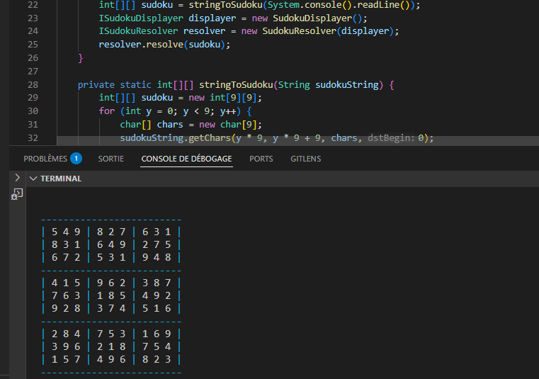

Kudosu est un résolveur de Sudoku développé en Java avec une interface en ligne de commande. Ce projet implémente des algorithmes de résolution sophistiqués capables de résoudre des grilles de Sudoku de différents niveaux de difficulté.
L'application utilise des techniques de backtracking et d'optimisation pour trouver les solutions de manière efficace, tout en offrant une interface utilisateur claire et intuitive dans le terminal.